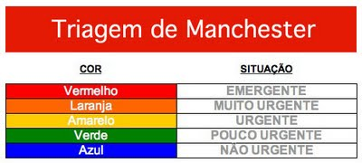

Things are hectic at your local clinic.With a surge in patients, managing the queue has become increasingly difficult. The clinic has asked for your help to restore order.
Patients arrive at the clinic one by one, and from time to time, a patient is called in for consultation.
Each patient has one of three priority levels: A, B, or C.
Priority A is the highest, followed by B, and then C.
When a patient is called in, the one with the highest priority who has been waiting the longest is chosen.
Your task is to determine the order in which patients are called.
n (1 ≤ n ≤ 50,000) — the number of events.1 — indicating a patient is called in (you should output the name of the patient selected), or0 — indicating a patient has arrived. In this case, two more lines follow:
A, B, or C, representing the patient’s priority level.
For each event where a patient is called in (event 1), print the name of the selected patient.
3 0 JoaquimExemplar B 0 CarlosCoiso A 1
CarlosCoiso
4 0 Jonas C 0 Chabier A 1 1
Chabier Jonas
Os tempos estão complicados na tua clínica local.
Com um aumento repentino no número de pacientes, gerir a fila de espera tornou-se uma tarefa difícil. A clínica pediu a tua ajuda para restaurar a ordem.
Os pacientes chegam à clínica um a um, e de tempos a tempos, um deles é chamado para consulta.
Cada paciente tem um dos três níveis de prioridade: A, B ou C.
A prioridade A é a mais alta, seguida por B e depois C.
Sempre que alguém é chamado, é escolhido o paciente com maior prioridade que está à espera há mais tempo.
O teu objetivo é determinar a ordem em que os pacientes são chamados.
n (1 ≤ n ≤ 50.000) — o número de eventos.1 — indicando que um paciente é chamado (deves imprimir o nome do paciente selecionado), ou0 — indicando que chegou um novo paciente. Neste caso, seguem-se mais duas linhas:
A, B ou C, indicando o nível de prioridade do paciente.
Para cada evento em que um paciente é chamado (evento 1), imprime o nome do paciente selecionado.
3 0 JoaquimExemplar B 0 CarlosCoiso A 1
CarlosCoiso
4 0 Jonas C 0 Chabier A 1 1
Chabier Jonas
Content by Fernando Silva and Vanessa Silva (DCC/FCUP), copied from the original website.